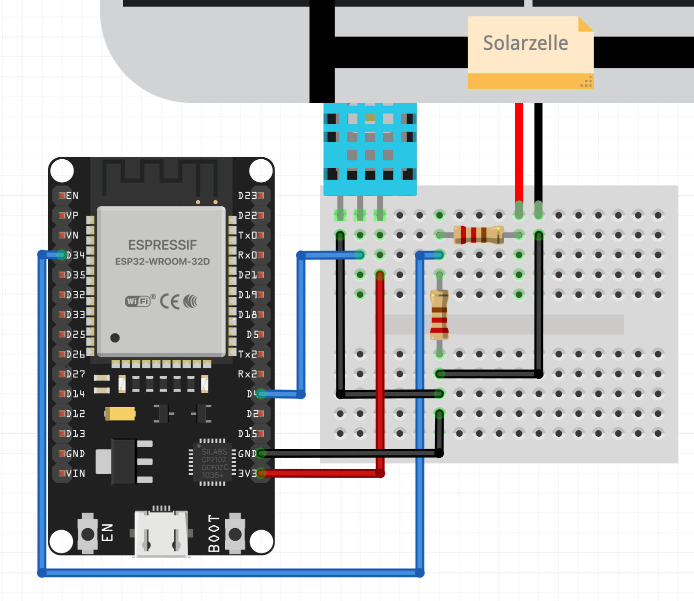
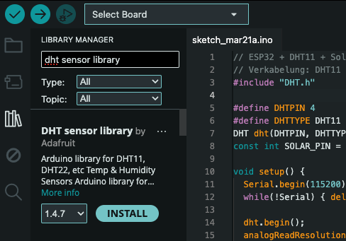
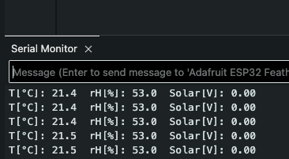
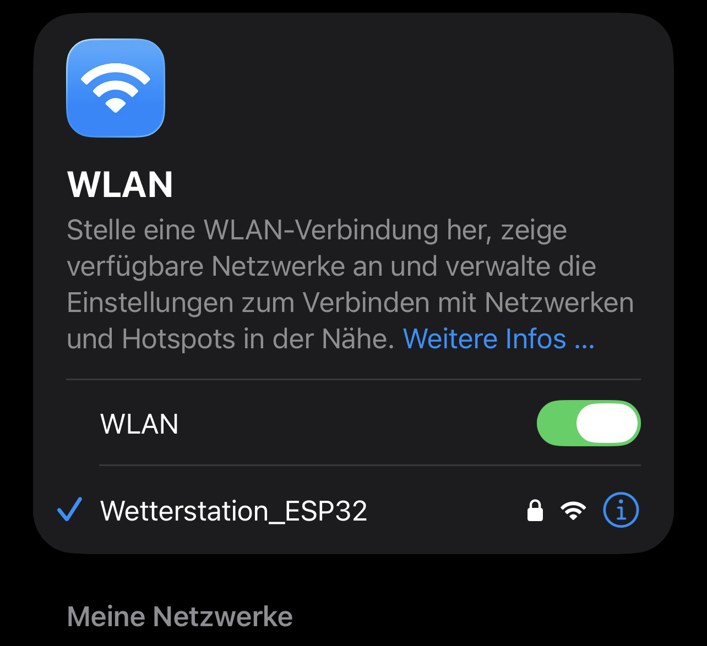
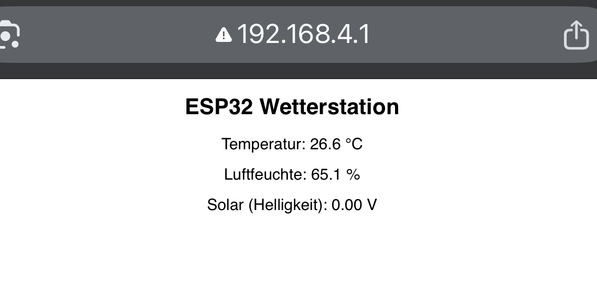

Wetterapp-Test 2.0
Leitfrage: Wie zuverlässig ist eine Wettervorhersage? Dieses Modul begleitet Sie vom Aufbau einer einfachen vernetzten Wetterstation bis zur Auswertung und zum Vergleich eigener Messdaten mit Vorhersage‑Apps.
Autor: John van Dijk
Lizenzhinweis: CC BY-SA 4.0
In diesem Lernmodul lernen sie, eine kleine IoT‑Wetterstation mit ESP32 und DHT11 aufzubauen, Messdaten per WLAN in die Cloud zu senden und die Daten wissenschaftlich auszuwerten. Ziel ist es, die Güte von Vorhersagen kritisch zu hinterfragen und eigene Messreihen zu produzieren.
Vorbereitung & Werkzeuge
-
Zum zentralen ESP32-Setup
- Vorbereitung der Programmierumgebung (Arduino IDE)
- Verbindungs-Strategien
- Erster Test-Code
Benötigte Materialien
- ESP32 NodeMCU (oder kompatibles ESP32-Board)
- DHT11 Umweltsensor (Temperatur und Luftfeuchte)
- Kleines Solarmodul
- Jumperkabel, Steckbrett oder Lötzubehör
Hardware-Basis (ESP32 & Sensoren)
Der Umstieg auf den ESP32
Mehr Leistung und integriertes WLAN schaffen Reserven für spätere Cloud‑Anbindung. Der ESP32 lässt sich gleich programmieren wie einen Arduino und nach der Vorbereitung, auch im gleichem Programm !

Die neuen Sinnesorgane
DHT11
Sensor für: Temperatur und Luftfeuchtigkeit.

Solarzelle
Unser analoger Helligkeitssensor
Verbindung
DHT11 Datenpin z.B. an GPIO4. Solarzelle über Spannungsteiler an GPIO34.

ESP32
Zentraleinheit.
WLAN & Sensor-Auswertung.
DHT11 (Temp/Feuchte)
Schwarz: GND
Rot: 3,3V
Blau: GPIO4 (Daten)
Spannungsteiler
R1 & R2 teilen Solarspannung. Messung über GPIO34.
Achtung: 3,3V Logikpegel!
Warum brauchen wir einen Spannungsteiler?
Der General Purpose Input Output (GPIO) des ESP32 kann eine Eingangsspannung von maximal 3,3 V verarbeiten. Eine kleine Solarzelle kann jedoch im Leerlauf oder bei voller Sonneneinstrahlung z.B. 6 V oder sogar mehr liefern.
Wird diese Spannung direkt an den ESP32 angeschlossen, wird der Mikrocontroller sofort zerstört! Um das zu verhindern, verwenden wir den Spannungsteiler (den du schon aus Modul 1 kennst) aus zwei Widerständen (R1 und R2), die die Spannung auf einen sicheren Bereich (≤ 3,3 V) "herunterteilen".
Code
DHT11 Bibliothek installieren!
Damit der ESP32 den Sensor auslesen kann, fehlt ihm noch ein "Wörterbuch" – die richtige Bibliothek in der Arduino IDE:
- Klicke links in der Seitenleiste auf das Buch-Symbol (Bibliotheksverwalter) oder wähle Sketch > Bibliothek einbinden > Bibliotheken verwalten....
- Suche oben im Suchfeld nach "DHT sensor library".
- Scrolle den Ergebnissen in der Liste nach unten bis zum Eintrag "DHT sensor library by Adafruit" und klicke auf "Installieren".
- Sollte die IDE fragen, ob weitere Abhängigkeiten (wie Adafruit Unified Sensor) installiert werden sollen, klicke zwingend auf "Install all"!

Minimal‑Sketch: Liest DHT11 und Solarzelle aus und gibt Daten via Serial aus.
// ESP32 + DHT11 + Solarzelle (Minimaltest)
// Verkabelung: DHT11 Daten an GPIO4; Solar an GPIO34 (max. 3,3 V sicherstellen)
#include "DHT.h"
#define DHTPIN 4
#define DHTTYPE DHT11
DHT dht(DHTPIN, DHTTYPE);
const int SOLAR_PIN = 34; // ADC1_CH6 (nur Eingang)
void setup() {
Serial.begin(115200);
while(!Serial) { delay(10); }
dht.begin();
analogReadResolution(12); // 0..4095
Serial.println("Start: ESP32 + DHT11 + Solarzelle");
}
void loop() {
float h = dht.readHumidity();
float t = dht.readTemperature();
int raw = analogRead(SOLAR_PIN); // 0..4095
float v = raw * (3.3 / 4095.0); // Volt (Referenz 3,3 V)
if (isnan(h) || isnan(t)) {
Serial.println("Fehler beim Auslesen des DHT11!");
} else {
Serial.print("T[°C]: "); Serial.print(t, 1);
Serial.print(" rH[%]: "); Serial.print(h, 1);
}
Serial.print(" Solar[V]: "); Serial.println(v, 2);
delay(2000); // DHT11 braucht etwas länger zwischen den Messungen
}
Der Check im Seriellen Monitor
Erwartet: Spalten mit T, rH und Solar‑Spannung. Werte ändern sich bei Handwärme (oder Anhauchen) auf den Sensor oder Lichtwechsel.

WLAN-Access Point & Datenausgabe
Der ESP32 spannt nun sein eigenes WLAN (Access Point) auf, um die Messwerte direkt im Browser an Smartphones oder Laptops in der Nähe zu senden.
Das eigene Netzwerk
sequenceDiagram
participant Sensoren as 🌡️ Sensoren (DHT11 & Solar)
participant ESP32 as ⚙️ ESP32 (Webserver)
participant Handy as 📱 Smartphone (Nutzer)
Note over ESP32: 1. Setup Phase
ESP32->>ESP32: WLAN "Wetterstation_ESP32" aufspannen
ESP32->>ESP32: Webserver auf Port 80 starten
Note over Sensoren, ESP32: 2. Betriebs-Phase (Loop)
Sensoren-->>ESP32: Aktuelle Temperatur / Helligkeit senden
ESP32->>ESP32: Variablen mit neuen Werten überschreiben
Note over ESP32, Handy: 3. Datenabruf (Nutzer-Interaktion)
Handy->>ESP32: Verbindet sich mit WLAN
Handy->>ESP32: Öffnet IP im Browser (Anfrage / Request)
ESP32->>ESP32: Baut HTML-Seite mit aktuellen Messwerten zusammen
ESP32-->>Handy: Sendet fertige Webseite (Antwort / Response)
Note over Handy: Browser zeigt Webseite <br>mit Messwerten an!
Code
#include <WiFi.h>
#include <WebServer.h>
#include "DHT.h"
const char* ssid = "Wetterstation_ESP32";
const char* pass = "12345678"; // Mindestens 8 Zeichen!
WebServer server(80);
#define DHTPIN 4
#define DHTTYPE DHT11
DHT dht(DHTPIN, DHTTYPE);
const int SOLAR_PIN = 34;
// Globale Variablen für Messwerte
float temp = 0.0, hum = 0.0, solarV = 0.0;
unsigned long lastDHTRead = 0;
void setup() {
Serial.begin(115200);
// --- Sensor-Setup (DHT11 etc.) hier einfügen ---
dht.begin();
analogReadResolution(12);
// ------------------------------------------------
// WLAN Access Point starten
WiFi.softAP(ssid, pass);
Serial.print("AP IPs: "); Serial.println(WiFi.softAPIP());
// Wenn jemand die IP im Browser öffnet, wird diese Route ausgeführt:
server.on("/", []() {
String html = "<!DOCTYPE html><html><body style='font-family:sans-serif; text-align:center;'>";
html += "<h1>ESP32 Wetterstation</h1>";
if (isnan(temp) || isnan(hum)) {
html += "<p>Fehler beim Auslesen des DHT11-Sensors!</p>";
} else {
html += "<p>Temperatur: " + String(temp, 1) + " °C</p>";
html += "<p>Luftfeuchte: " + String(hum, 1) + " %</p>";
}
html += "<p>Solar (Helligkeit): " + String(solarV, 2) + " V</p>";
html += "</body></html>";
server.send(200, "text/html", html);
});
server.begin();
}
void loop() {
server.handleClient(); // Webserver-Anfragen entgegennehmen
// --- Sensor-Auslesen (Temperatur, Solar etc.) hier einfügen ---
if (millis() - lastDHTRead > 2000) {
temp = dht.readTemperature();
hum = dht.readHumidity();
lastDHTRead = millis();
}
solarV = analogRead(SOLAR_PIN) * (3.3 / 4095.0);
// --------------------------------------------------------------
delay(10); // Kleines Delay für die Stabilität
}Hilfe: Upload funktioniert nicht?
Option 1: Upload-Geschwindigkeit reduzieren
- Manche Chips verarbeiten die hohe Standard-Geschwindigkeit nicht.
- Wähle im Menü Werkzeuge > Upload Speed den Wert 115200.
Option 2: BOOT-Taste drücken
- Hängt die Konsole bei
Connecting...fest? - Halte die BOOT-Taste auf dem ESP32 gedrückt, bis der Upload startet.
Verbindung & Anzeige
Nach dem Aufspielen: Mit dem neuen WLAN verbinden und die Standard-IP im Browser öffnen.

